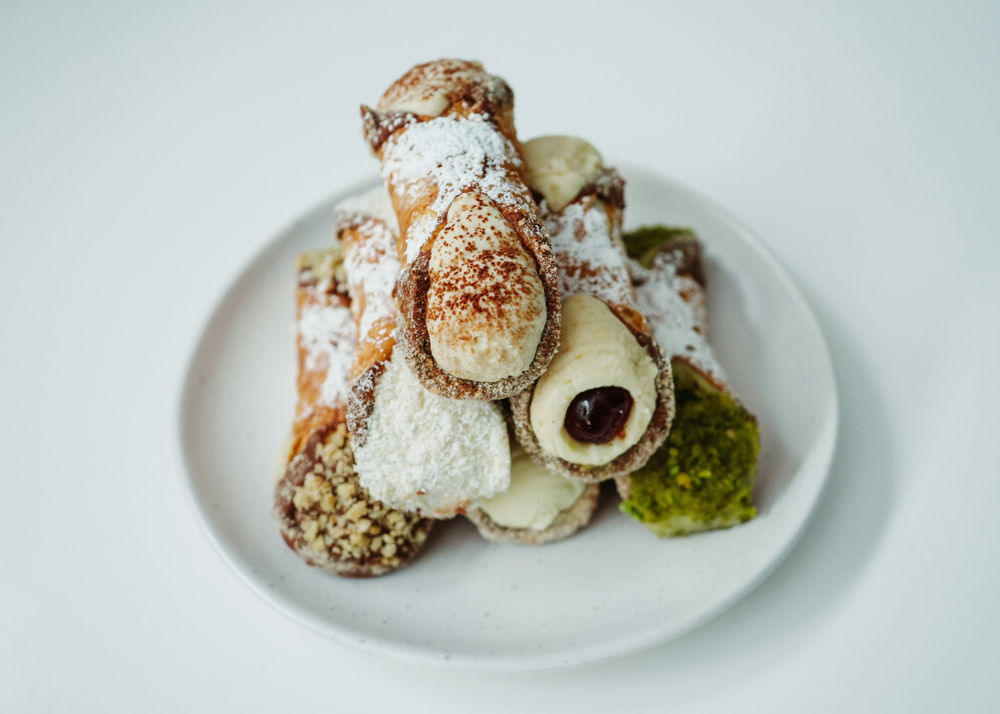

Cannoli are Sicilian pastries consisting of a tube-shaped shell of fried pastry dough, filled with a sweet, creamy filling containing ricotta cheese. Their size ranges from 9 to 20 centimetres (3+1/2 to 8 in). In mainland Italy, the food is commonly known as cannolo siciliano (lit. 'Sicilian cannoli'). 
In culinary traditions across Sicily, regional variations in cannoli fillings reflect local preferences and ingredient availability. In Palermo, cannoli are decorated with candied orange zest, adding a citrusy sweetness to the filling. In Catania, chopped pistachios are favored, adding a distinctive nutty flavor and texture. Ramacca is known for its purple artichokes, which also feature as filling in some cannoli recipes.